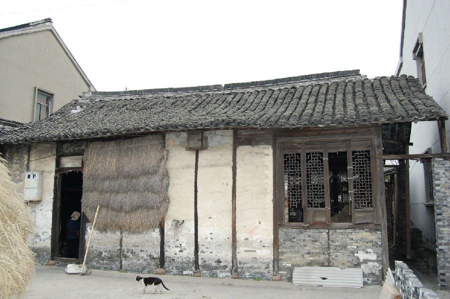

嘉兴市文物保护网 · 市级文物保护点 · 2020-11-02 · 原文

芥字港西费氏老宅位于嘉兴市秀洲区王江泾镇栋梁村6组芥字港西侧。据主人介绍始建于清乾隆末年至嘉庆初年。现仅存原宅后二进的局部，大都为晚清建筑。整宅坐北朝南，砖木梁架结构，第一进为五檩四柱平房、第二进为穿枋五檩二层楼房，呈长方形，总建筑占地面积约320平方米，通进深26米，通面阔11.6米。老宅东侧原有一排廊屋，现仅余东南角一段。用料粗大，做工讲究，梁、窗、门罩等处均雕有纹饰，墙壁亦有大幅砖雕，西侧有风火墙，屋顶为硬山顶，两端翘脊，脊上各设一只麒麟吻兽（现被所有人拆下保护）。老宅形制规模较大，建筑工艺较好，具有较高的历史和艺术价值。2009年公布为嘉兴市文物保护点。